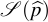
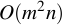
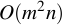

|
|
SLRA: Software for weighted structured low-rank approximation |
Overview
SLRA is a C software with interface to MATLAB, Octave, and R for solving low-rank approximation problems

with the following features:
mosaic Hankel structured approximating matrix ,
weighted 2-norm approximation criterion

fixed elements in the approximating matrix,
missing elements in the data matrix,
linear constraints on an approximating matrix's left kernel basis.
For an  matrix , with
matrix , with  , the computational complexity of the cost function and derivative evaluation is , so that the package is suitable for applications with
, the computational complexity of the cost function and derivative evaluation is , so that the package is suitable for applications with  . Problems with
. Problems with  can not be solved by the method, used in the software.
can not be solved by the method, used in the software.
Usage
In MATLAB/Octave, once the structure and approximation criterion are specified in a variable s (see examples and the manual), the problem is solved by a call of the slra function:
[ph, info] = slra(p, s, r, opt);
The optional parameter opt is used to specify an initial approximation and options for the optimization method.
The output parameter info contains information about the convergence of the optimization method.
System identification
A major application area of mosaic Hankel structured low-rank approximation methods is system identification. The slra package includes a wrapper function ident for identification of linear time-invariant systems. For details see the ident package.
Download and installation
Latest stable version (v0.5)
Current version (unstable)
Installation
For MATLAB/Octave users: unpack the archive and use addpath in MATLAB/Octave
For R users (Linux): unpack the archive and run make R in console
For advanced users/developers
The instructions how to compile from source are contained here
Citing
@Article{slra-software,
author = {I. Markovsky and K. Usevich},
title = {Software for weighted structured low-rank approximation},
journal = {J. Comput. Appl. Math.},
volume = {256},
pages = {278--292},
year = {2014},
}